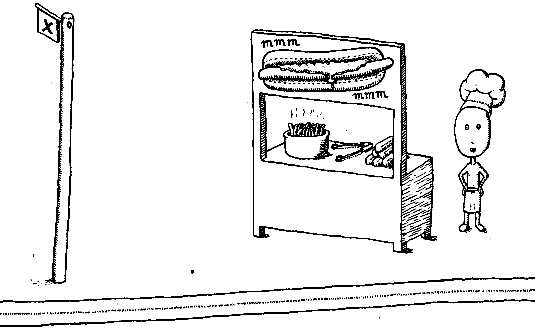

Welcome to the Bizarre Bazaar

We're building hotdog stands near the bus stops on the information superhighway.
Thanks to Andy Joyner for the cartoon
For ages now we've been listening to people whinge about the commercialisation of the net and how the super multi nationals are going to take over the world.
Step in the Bizarre Bazaar.
We'll sell you a stall in the Bizarre Bazzare dirt cheap and then you can have your own presence on the net, where you can sell pretty much what you like and not have to go to all the effort of setting up and promoting a web site for yourself. All you need to do is give us money.
The Bizarre Bazzar opened it's gates on Tuesday 14 March 1995.
You are visitor number 
What will you find in the Bizarre Bazaar?
At the moment not much as it's only been open for a few days. But we've hit the ground running with our first lucky stall holder.
The man behind the mask. Ned Kelly - bushranger, revolutionary, legend.
Hey, I this... count me in!